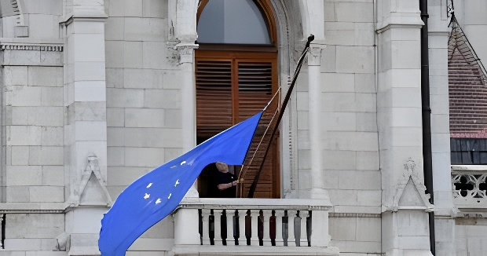

Le 9 mai 2026, Journée de l'Europe, Péter Magyar prête serment comme nouveau Premier ministre de Hongrie, mettant fin à seize années de règne de Viktor Orbán. Dès la séance inaugurale du Parlement, la nouvelle présidente de l'Assemblée, Ágnes Forsthoffer, ordonne le retour du drapeau de l'Union européenne sur le bâtiment du Parlement à Budapest — absent depuis douze ans. Ce geste symbolique incarne bien plus qu'un changement de décor : il marque le début d'une recomposition profonde des relations entre Budapest et Bruxelles, dans un pays confronté à une crise économique, à des milliards d'euros de fonds européens gelés et à un chantier institutionnel colossal.
La Hongrie a rejoint l'Union européenne le 1er mai 2004, dans le cadre du grand élargissement à dix nouveaux États membres d'Europe centrale et orientale. Pendant les premières années d'adhésion, Budapest s'intègre sans heurts dans les institutions européennes. Tout bascule à partir de 2010, lorsque Viktor Orbán revient au pouvoir avec une majorité des deux tiers au Parlement national — suffisante pour modifier la Constitution.
Orbán entame alors une transformation radicale de l'État hongrois, que lui-même théorise sous le nom de « démocratie illibérale » : réduction de l'indépendance de la justice, mise sous tutelle des médias, restrictions des droits des minorités, verrouillage progressif des contre-pouvoirs. En 2014, lors de son investiture pour un nouveau mandat, il fait retirer le drapeau de l'Union européenne du Parlement hongrois pour le remplacer par un drapeau hongrois — geste délibérément provocateur à l'égard de Bruxelles. La même année, il proclame que le système qu'il entend construire est « un État illibéral, pas un État libéral ».
Péter Magyar, 45 ans, est une figure atypique de la politique hongroise. Jusqu'en 2024, il est quasi inconnu du grand public. Ancien mari d'une ex-ministre de la Justice d'Orbán, il émerge sur la scène politique en dénonçant publiquement les pratiques du système Fidesz. En quelques mois, il fonde le parti Tisza et remporte un score inattendu aux élections européennes de juin 2024, devenant député européen.
Sa montée en puissance repose sur un diagnostic largement partagé par les Hongrois : le clientélisme et la corruption systémique du régime Orbán ont dégradé les services publics (routes, hôpitaux, écoles) au profit d'une oligarchie proche du pouvoir. Sa campagne pour les législatives d'avril 2026, centrée sur des enjeux internes — lutte contre la corruption, restauration de l'État de droit, récupération des fonds européens —, séduit notamment une jeune génération ayant grandi dans l'UE et très attachée à la liberté de circulation et aux droits européens.
Les élections législatives du 12 avril 2026 se tiennent dans un contexte de participation record. Le parti Tisza de Péter Magyar remporte 52 % des suffrages, contre 39 % pour le Fidesz. Cette victoire lui confère 141 sièges sur 199 au Parlement national — soit la majorité des deux tiers, la plus large jamais obtenue depuis la transition démocratique post-communiste de 1990. Le Fidesz, réduit à 44 sièges, s'effondre. Viktor Orbán, absent lors du vote d'investiture de son successeur, renonce à son siège de député.
La Hongrie adhère à l'Union européenne lors du grand élargissement à dix pays d'Europe centrale et orientale.
Viktor Orbán revient au pouvoir avec une majorité des deux tiers. Il entreprend une réécriture de la Constitution et une refonte des institutions.
Lors de son investiture pour un troisième mandat, Orbán fait retirer le drapeau européen du Parlement. Il théorise la « démocratie illibérale » lors d'un discours à l'université libre de Bálványos.
Le Parlement européen vote l'ouverture d'une procédure au titre de l'article 7 du TUE contre la Hongrie pour atteintes à l'État de droit.
La Commission européenne gèle plusieurs milliards d'euros de fonds européens destinés à la Hongrie en raison des violations persistantes de l'État de droit. En janvier 2025, la Hongrie perd définitivement plus d'un milliard d'euros — une première dans l'histoire de l'UE.
Aux élections européennes, le parti Tisza de Péter Magyar, fondé quelques mois plus tôt, arrive en deuxième position en Hongrie. Magyar devient député européen au sein du groupe PPE.
Élections législatives à participation record. Tisza remporte 52 % des voix et 141 sièges sur 199 — majorité des deux tiers. Orbán concède sa défaite et renonce à son siège de député.
Journée de l'Europe. Péter Magyar prête serment comme Premier ministre. Ágnes Forsthoffer, nouvelle présidente du Parlement, ordonne immédiatement le retour du drapeau européen sur le bâtiment — après douze ans d'absence.
La cérémonie d'investiture du 9 mai 2026 est délibérément chargée de sens. Choisie comme date de la prestation de serment, la Journée de l'Europe souligne la volonté du nouveau gouvernement de réinscrire la Hongrie dans le projet européen. À l'intérieur du Parlement, Ágnes Forsthoffer, élue présidente de l'Assemblée nationale par 193 voix sur 199, annonce sa première mesure dès le début de la séance : le retour du drapeau de l'Union européenne sur le bâtiment du Parlement hongrois.
« J'ordonne qu'à partir d'aujourd'hui, après 12 ans, le drapeau de l'Union européenne soit de nouveau hissé sur le bâtiment du Parlement hongrois. »
— Ágnes Forsthoffer, présidente du Parlement hongrois, 9 mai 2026À l'extérieur, plus de 100 000 personnes se rassemblent sous le soleil devant la silhouette néogothique du Parlement dominant le Danube. La foule brandit des drapeaux hongrois et européens mêlés, dans une atmosphère de fête nationale. Ursula von der Leyen, présidente de la Commission européenne, salue depuis Bruxelles un « nouvel élan » et déclare que « les cœurs de l'Europe sont à Budapest » en ce jour.
« Je ne régnerai pas sur la Hongrie, mais je servirai mon pays. »
— Péter Magyar, Premier ministre de Hongrie, discours d'investiture, 9 mai 2026Le principal défi économique qui attend Magyar est colossal. Sous le régime Orbán, l'Union européenne a progressivement gelé l'accès de la Hongrie aux fonds structurels et au plan de relance post-pandémique en raison des atteintes répétées à l'État de droit. Au total, environ 18 milliards d'euros de fonds sont bloqués dans le cadre du mécanisme de conditionnalité budgétaire, auxquels s'ajoutent plus de 16 milliards de prêts européens — notamment au titre du programme de défense SAFE — non débloqués.
L'urgence est immédiate : environ 11 milliards d'euros du fonds de relance post-COVID doivent être utilisés avant la mi-août 2026, sous peine d'être définitivement perdus. Magyar s'est rendu à Bruxelles dès fin avril, avant même son investiture, pour rencontrer Ursula von der Leyen et António Costa. Les échanges ont été qualifiés d'« extrêmement constructifs » par le futur Premier ministre, qui promet que les fonds « commenceront bientôt à arriver en Hongrie ».
Magyar a hérité d'un État profondément reconfiguré par seize ans de gouvernance Fidesz. Orbán avait placé des proches à la tête de l'ensemble des institutions indépendantes : Cour constitutionnelle, autorité des médias, parquet général, Cour suprême. Le nouveau Premier ministre a demandé à tous les hauts responsables issus de l'ancien système de démissionner avant le 31 mai 2026, sous peine de voir la loi fondamentale modifiée pour les démettre. Il réclame en premier lieu la démission du président de la République Tamás Sulyok, proche d'Orbán.
Simultanément, Magyar doit composer avec une équipe gouvernementale en grande partie technocratique et peu expérimentée politiquement. Son premier faux pas — la tentative de nommer son futur beau-frère à la Justice — a d'emblée suscité des critiques dans un pays marqué par des années de népotisme, soulignant que le changement de cap ne sera pas exempt d'embûches.
| Dossier | Enjeu | Délai |
|---|---|---|
| Fonds relance post-COVID | ~11 Md€ à mobiliser | Mi-août 2026 |
| Fonds de cohésion | ~7 Md€ gelés | Réformes préalables |
| Programme SAFE (défense) | ~16 Md€ de prêts | En négociation |
| Parquet européen (EPPO) | Adhésion volontaire | Avant fin 2026 |
| Réforme judiciaire | Indépendance des juges | Continu |
L'un des enseignements frappants de l'ère Orbán est que ses attaques répétées contre l'Union européenne n'ont pas entamé l'attachement des Hongrois à leur appartenance communautaire. Selon l'Eurobaromètre de l'automne 2025, 82 % des Hongrois considèrent que faire partie de l'UE est une « bonne chose » — soit une proportion supérieure à la moyenne des 27 États membres, qui s'établit à 74 %. Ce paradoxe traduit une réalité politique profonde : les électeurs hongrois ont pu se montrer sensibles au discours nationaliste d'Orbán sans pour autant remettre en cause leur ancrage européen, auquel la jeune génération — celle ayant grandi avec la liberté de circulation depuis 2004 — est particulièrement attachée.
Le changement de régime en Hongrie intervient dans un contexte européen sous haute tension. Pendant seize ans, Orbán a utilisé son droit de veto au Conseil européen pour bloquer les sanctions contre la Russie, ralentir l'aide à l'Ukraine et mettre en minorité ses partenaires sur une série de dossiers stratégiques. La victoire de Magyar ouvre la voie à une normalisation des relations de Budapest avec Bruxelles, l'OTAN et Kiev, après une période de friction permanente. Elle affaiblit également le groupe des « Patriotes pour l'Europe » au Parlement européen, où le Fidesz siégeait aux côtés du RN français et du FPÖ autrichien. Pour les partisans de l'État de droit en Europe, Budapest représente désormais un signal d'espoir : la preuve que les démocraties illibérales peuvent être défaites par les urnes, quand bien même elles auraient profondément reconfiguré les règles du jeu électoral.